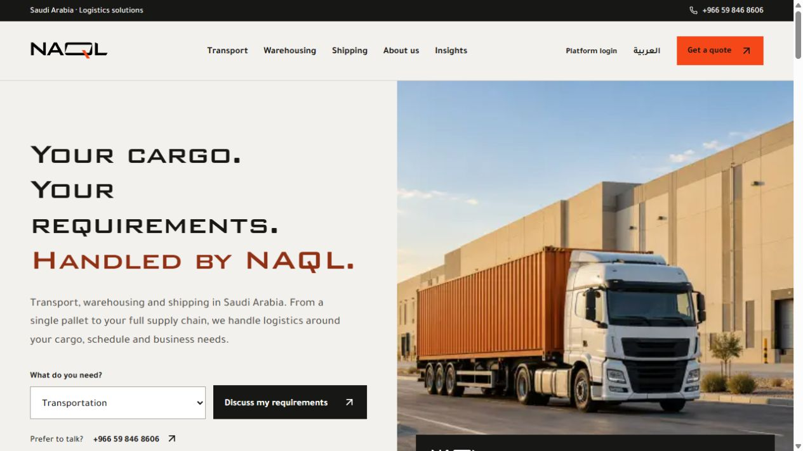

naqlapp
checkingThe public logistics website and Truck Dispatcher, its transport management system: trip dispatch, fleet and driver assignments, delivery evidence and billing readiness, with company-scoped access.
React · TypeScript · Node.js · PostgreSQL
The TMS is a client system behind a login, so there's no public source. I can walk you through it in an interview.